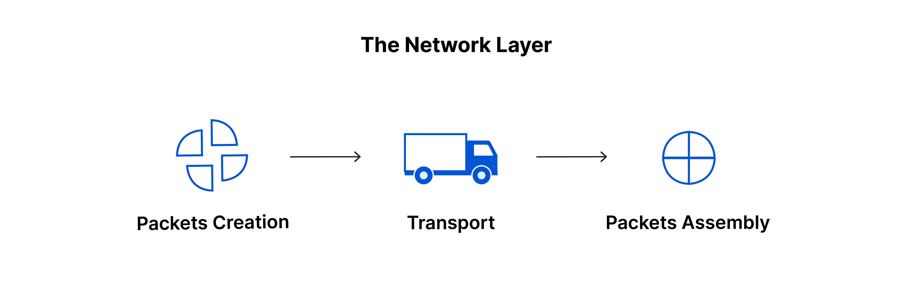

¿Qué es?
La capa de red es responsable de facilitar la transferencia de datos entre dos redes diferentes. Si los dispositivos que se comunican se encuentran en la misma red, entonces la capa de red no es necesaria. Esta capa divide los segmentos de la capa de transporte en unidades más pequeñas, llamadas paquetes, en el dispositivo del emisor, y vuelve a juntar estos paquetes en el dispositivo del receptor. La capa de red también busca la mejor ruta física para que los datos lleguen a su destino; esto se conoce como enrutamiento.
Orientación de conexión
Hay dos formas en las que el nivel de red puede funcionar internamente, pero independientemente de que la red funcione internamente con datagramas o con circuitos virtuales puede dar hacia el nivel de transporte un servicio orientado a conexión:
- Datagrama: Cada paquete se encamina independientemente, sin que el origen y el destino tengan que pasar por un establecimiento de comunicación previo.
- circuitos virtuales: En una red de circuitos virtuales dos equipos que quieran comunicarse tienen que empezar por establecer una conexión. Durante este establecimiento de conexión, todos los routers que haya por el camino elegido reservarán recursos para ese circuito virtual específico.
Tipos de servicio
- Servicios no orientados a la conexión (CLNS) paquete debe llevar la dirección destino, y con cada uno, los nodos de la red deciden el camino que se debe seguir. Existen muchas técnicas para realizar esta decisión, como por ejemplo comparar el retardo que sufriría en ese momento el paquete que se pretende transmitir según el enlace que se escoja dependiendo del tipo de red.
- Servicios orientados a la conexión (CONS): Sólo el primer paquete de cada mensaje tiene que llevar la dirección destino. Con este paquete se establece la ruta que deberán seguir todos los paquetes pertenecientes a esta conexión. Cuando llega un paquete que no es el primero se identifica a que conexión pertenece y se envía por el enlace de salida adecuado, según la información que se generó con el primer paquete y que permanece almacenada en cada conmutador o nodo.
Protocolos
| Protocolo | Descripción |
|---|---|
| Protocolo IP | El protocolo IP y sus protocolos de enrutamiento asociados son posiblemente la parte más significativa del conjunto TCP/IP. El protocolo IP se encarga de: |
| Direcciones IP | Las convenciones de direcciones IP forman parte del protocolo IP. Cómo diseñar un esquema de direcciones IPv4 introduce las direcciones IPv4 y Descripción general de las direcciones IPv6 las direcciones IPv6. |
| Comunicaciones de host a host | El protocolo IP determina la ruta que debe utilizar un paquete, basándose en la dirección IP del sistema receptor. |
| Formato de paquetes | El protocolo IP agrupa paquetes en unidades conocidas como datagramas. Puede ver una descripción completa de los datagramas en Capa de Internet: preparación de los paquetes para la entrega. |
| Fragmentación | Si un paquete es demasiado grande para su transmisión a través del medio de red, el protocolo IP del sistema de envío divide el paquete en fragmentos de menor tamaño. A continuación, el protocolo IP del sistema receptor reconstruye los fragmentos y crea el paquete original. |
| Protocolo ARP | El protocolo de resolución de direcciones (ARP) se encuentra conceptualmente entre el vínculo de datos y las capas de Internet. ARP ayuda al protocolo IP a dirigir los datagramas al sistema receptor adecuado asignando direcciones Ethernet (de 48 bits de longitud) a direcciones IP conocidas (de 32 bits de longitud). |
| Protocolo ICMP | El protocolo de mensajes de control de Internet (ICMP) detecta y registra las condiciones de error de la red. ICMP registra: |
| Paquetes soltados | Paquetes que llegan demasiado rápido para poder procesarse. |
| Fallo de conectividad | No se puede alcanzar un sistema de destino. |
| Redirección | Redirige un sistema de envío para utilizar otro enrutador. |